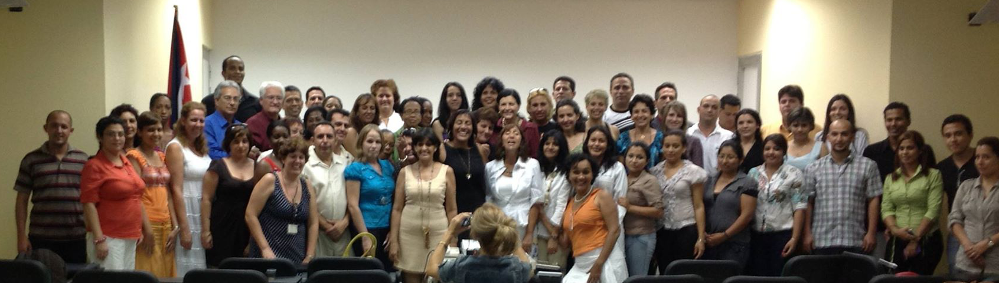

Capítulo Cubano de Neurofisiología Clínica¶
una sección de la Sociedad de Neurociencias de Cuba - SONECUB
{kind=link}
El capítulo cubano de Neurofisiología Clínica es una asociación de profesionales dedicada a promover la excelencia dentro de la especialidad así como la formación, investigación e intercambio dentro de la disciplina para contribuir a incrementar el conocimiento del funcionamiento del sistema nervioso en la salud y la enfermedad.
¿Qué es la Neurofisiología Clínica?¶
La Neurofisiología Clínica -NC-, según la definición de la IFCN es la especialidad o subespecialidad médica que estudia la función y la disfunción del sistema nervioso causada por alteraciones del cerebro, la médula espinal, los nervios periféricos y/o los músculos empleando técnicas fisiológicas y de imágenes para medir la actividad del sistema nervioso. Los datos que se obtienen con sus técnicas habituales, al interpretarse de conjunto con la evaluación clínica del paciente, permiten diagnosticar o asistir el diagnóstico de diferentes condiciones neurológicas, así como cuantificar, monitorizar y seguir el progreso de las mismas. La NC también abarca métodos fisiológicos empleados en el tratamiento de alteraciones neurológicas y psiquiátricas.
Junta de Gobierno¶
Presidente
- Dr. Calixto Machado <braind@infomed.sld.cu>
Vice-Presidente
- Dr. Arquímides Montoya <arqui@medired.scu.sld.cu>
Tesorero
- Dra. Valia Rodríguez <valia.rodriguez@gmail.com>
Miembros
- Dr. Lázaro Gómez <lazarog@neuro.ciren.cu>
- Dr. Lidia Charroó <lidia@cneuro.edu.cu>